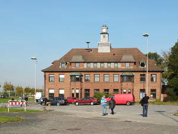

Leewe Mädches, wellkomme em Hähz des Rhingland!
Rails Girls comes to Monheim (right in the middle between Cologne and Düsseldorf)! During the fun and free web development workshop we'll dive into the magical world of Ruby on Rails.
Apply now! Applications are open until the 15th of February.
You learn designing, prototyping and coding with the help from our coaches.
You need your own laptop, curiosity and a sprinkle of imagination!
Want to help? We are looking for volunteers and Rails coaches. Email us.
| 18.00 - |
Installation partyGet know the attendees a little bit before hand. Bring your laptop if you can, so we can install Ruby on Rails for you.Where: innoQ Deutschland GmbH, Krischerstraße 100, 40789 Monheim |
|---|---|
| 21.00 - |
Coach dinnerAll of the coaches are welcome to our coach dinner, where we'll go through the program for the next day. |
| 9:00 - 10:00 |
Registration, coffee and installation festDuring the morning we’ll install Ruby on Rails on your computer. |
|---|---|
| 10:00 - 10:15 |
WelcomeOutline of the day & word from sponsors |
| 10:20 - 10:45 |
Designing your web app -workshopBy Liane Thönnes & Tatjana Lajendäcker |
| 10:50 - 11:10 |
Tryruby.orgLet's get coding! |
| 11:10 - 13:00 |
WORKSHOPJumpstart your first web application |
| 13:00 - 13:30 | Lunch |
| 13.30- 13:45 |
Bentobox - Understanding Web AppsRecap of what we’ve learned and how it all fits together.By Stefan Tilkov |
| 13:45 - 14:30 |
Lightning talks from coaches |
| 14:30 - 16:30 |
WORKSHOPExtend your application. |
| 20:00 - |
AfterpartyOpen for everyone, meet cool people interested in tech. |
Applications close: February 15th
Acceptances informed: February 16th
How to get there: See below.
Rails Girls Rheinland is co-organized with our awesome partners.
Want to help? We're looking for partners & sponsors for the non-profit event! Email us!
 innoQ offers consulting and development services for challenging projects.
innoQ offers consulting and development services for challenging projects.
 Railslove is a small team of passionate hackers, thinkers and designers creating juicy stuff for the web.
Railslove is a small team of passionate hackers, thinkers and designers creating juicy stuff for the web.
 Cluster organization CREATIVE.NRW fosters creative companies and entrepreneurs in Germany´s biggest state, North Rhine-Westphalia (NRW). Featuring 315.000 people in 50.000 businesses, accounting for 36 billion Euro turnover, the Creative Industries ranks third place in NRW´s economy. The main objective of CREATIVE.NRW is to secure and expand this position by providing a wide range of professional services, thus expanding growth and innovation in NRW.
Cluster organization CREATIVE.NRW fosters creative companies and entrepreneurs in Germany´s biggest state, North Rhine-Westphalia (NRW). Featuring 315.000 people in 50.000 businesses, accounting for 36 billion Euro turnover, the Creative Industries ranks third place in NRW´s economy. The main objective of CREATIVE.NRW is to secure and expand this position by providing a wide range of professional services, thus expanding growth and innovation in NRW.
How much does the workshop cost? Nothing, it's free! You just need to be excited!
Who is this aimed for? Women of any age with basic knowledge of working with a computer. We’ve had people of all ages taking part. Most of the speeches are given in english, but small group work is done in german. Please bring your laptop.
Can men attend? Yes, but you need to be accompanied by an interested lady. Also, girls are given a priority.
I know how to program - How can I help? We’re also looking for people to be coaches. We’ll have a two-three hour workshop before the event to walk you through the curriculum. Email us
The lovely building with its cute clock tower is innoQ Deutschland GmbH, Krischerstraße 100, 40789 Monheim.
Here are links to that location on Openstreetmap map and on Google Maps route finding service.
Should you get lost or stuck, dial +49 2173 3366 188. This should connect you to an organizer or coach that will try to help you get there.

You'll be heading for the bus stop Deusser Haus in Monheim (Rheinl.). The innoQ-building is just a few steps from that bus stop. You can use the connection finder in its more or less English version or its German one, or else one of these:
central train station, depart at 16:57 from track 10 on train S 6 heading for Essen. From Köln, you'll need a “Preisstufe 3” ticket (4.80 €) of VRS, it'll take you right to the place.
Get off that train at Langenfeld, which you should reach at 17:25.
Enter bus 790 heading for Landwirtschaftszentrum, which should come at 17:31.
Get off the bus at Monheim Busbahnhof, which you should reach at 17:41.
Enter bus 789 heading for Holthausen, which should come at 17:50.
Get off the bus at Deusser Haus at 17:53.
central train station, depart at 17:12 from track 11 on train S 6 heading for Köln Nippes. From Düsseldorf, you'll need a “B” ticket (5.10 €) of VRR, it'll take you right to the place.
Get off that train at Düsseldorf Hellerhof, which you should reach at 17:29.
Enter bus 789 headed for Monheim mona mare. This bus shold come at 17:33 and reach Deusser Haus at 17:45.
connecting the train station Langenfeld S with our Railsgirls Rheinland location.
central train station, depart at 8:37 from track 10 on train S 6 heading for Essen. From Köln, you'll need a “Preisstufe 3” ticket (4.80 €) of VRS.
Get off that train at Langenfeld, which you should reach at 9:05.
central train station, depart at 8:32 from track 11 on train S 6 heading for Köln Nippes. From Düsseldorf, you'll need a “B” ticket (5.10 €) of VRR.
When you are past Hellerhof, there will be a stop called Langenfeld Bergerhausen. Wrong stop, no shuttle service here, so remain seated.
Rather, get off that train at the next stop after Langenfeld Bergerhausen, which is plain Langenfeld, which you should reach at 8:54.
Proceed from the train station to the parking lot and bus stops. Some friendly person waving a Railsgirls logo will be eager you get you to the right place. - Should you experience a problem, that number again: +49 2173 3366 188.
After the event, there will be a shuttle service bringing you back to the Langenfeld S train station. But of course, we don't really want you to leave just then! You'd be missing a lot of the fun if you did!
The smart thing is, stay for the Afterparty! There will be yet another shuttle service then, too.